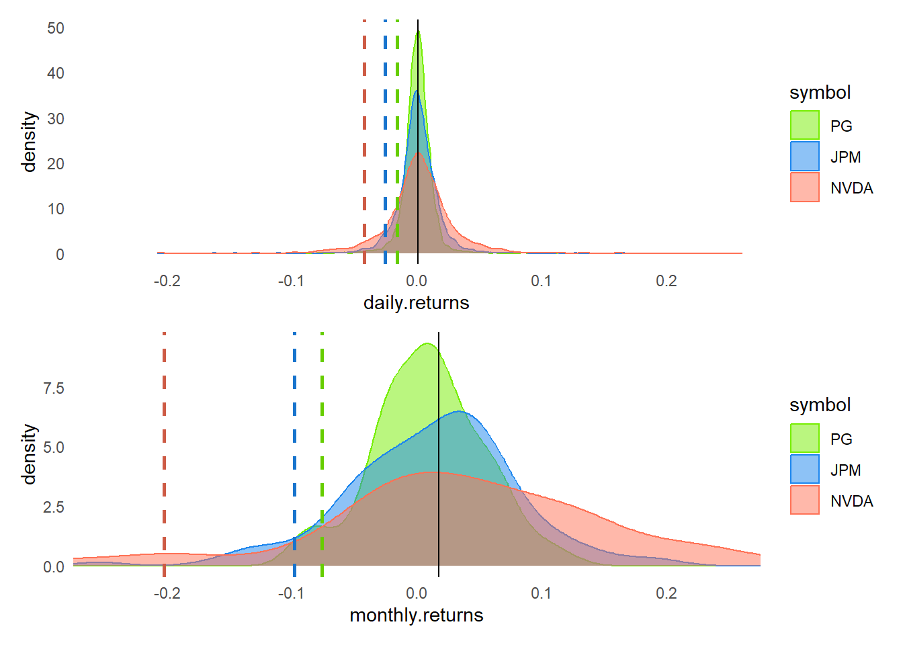

library(tidyverse)
library(tidyquant)
library(patchwork)
library(scales)
symbols <- c("PG", "JPM", "NVDA")
mult_stocks <- tq_get(symbols, get = "stock.prices", from = "2012-12-31", to = "2022-12-31")
mult_stocks$symbol <- mult_stocks$symbol <- factor(mult_stocks$symbol, levels = c("PG", "JPM", "NVDA"))
# tq_mutate_fun_options() returns list of compatible mutate functions by pkg
all_returns_daily <- mult_stocks |>
group_by(symbol) |>
tq_transmute(select = adjusted,
mutate_fun = periodReturn,
period = "daily",
type = "log")
all_returns_monthly <- mult_stocks |>
group_by(symbol) |>
tq_transmute(select = adjusted,
mutate_fun = periodReturn,
period = "monthly",
type = "log")
# reframe() has apparently replaced summarize()
quantiles_daily <- all_returns_daily |>
group_by(symbol) |>
reframe(quantiles = quantile(daily.returns, probs = c(0.05, 0.95)))
quantiles_monthly <- all_returns_monthly |>
group_by(symbol) |>
reframe(quantiles = quantile(monthly.returns, probs = c(0.05, 0.95)))
# 5% quantile for each stock, DAILY
PG_05d <- quantiles_daily$quantiles[1]
JPM_05d <- quantiles_daily$quantiles[3]
NVDA_05d <- quantiles_daily$quantiles[5]
mean_d <- mean(all_returns_daily$daily.returns)
# 5% quantile for each stock, MONTHLY
PG_05m <- quantiles_monthly$quantiles[1]
JPM_05m <- quantiles_monthly$quantiles[3]
NVDA_05m <- quantiles_monthly$quantiles[5]
mean_m <- mean(all_returns_monthly$monthly.returns)
# I probably spend too much time tinkering with colors
# col_ticker_fills <- c("PG" = "blue", "JPM" = "yellow", "NVDA" = "red")
# col_ticker_fills <- c("PG" = "#90EE90", "JPM" = "#ff6347", "NVDA" = "#8B0000")
col_ticker_fills <- c("PG" = "chartreuse2", "JPM" = "dodgerblue2", "NVDA" = "coral1")
col_ticker_colors <- c("PG" = "chartreuse3", "JPM" = "dodgerblue3", "NVDA" = "coral3")
col_PG_line <- "chartreuse3"; col_JPM_line <- "dodgerblue3"; col_NVDA_line <- "coral3"
p_hist_daily <- all_returns_daily |>
ggplot(aes(x = daily.returns, fill = symbol, color = symbol)) +
geom_density(alpha = 0.50) +
geom_vline(xintercept = PG_05d, color = col_PG_line, linetype = "dashed", linewidth = 1) +
geom_vline(xintercept = JPM_05d, color = col_JPM_line, linetype = "dashed", linewidth = 1) +
geom_vline(xintercept = NVDA_05d, color = col_NVDA_line, linetype = "dashed", linewidth = 1) +
geom_vline(xintercept = mean_d, color = "black", linewidth = 0.4) +
scale_fill_manual(values = col_ticker_fills) +
scale_color_manual(values = col_ticker_fills) +
theme_minimal() +
coord_cartesian(xlim = c(-0.25, 0.25)) +
theme(
panel.grid.major = element_blank(),
panel.grid.minor = element_blank(),
)
p_hist_monthly <- all_returns_monthly |>
ggplot(aes(x = monthly.returns, fill = symbol, color = symbol)) +
geom_density(alpha = 0.50) +
geom_vline(xintercept = PG_05m, color = col_PG_line, linetype = "dashed", linewidth = 1) +
geom_vline(xintercept = JPM_05m, color = col_JPM_line, linetype = "dashed", linewidth = 1) +
geom_vline(xintercept = NVDA_05m, color = col_NVDA_line, linetype = "dashed", linewidth = 1) +
geom_vline(xintercept = mean_m, color = "black", linewidth = 0.4) +
scale_fill_manual(values = col_ticker_fills) +
scale_color_manual(values = col_ticker_fills) +
theme_minimal() +
coord_cartesian(xlim = c(-0.25, 0.25)) +
theme(
panel.grid.major = element_blank(),
panel.grid.minor = element_blank(),
)
p_hs <- p_hist_daily / p_hist_monthly
p_hs